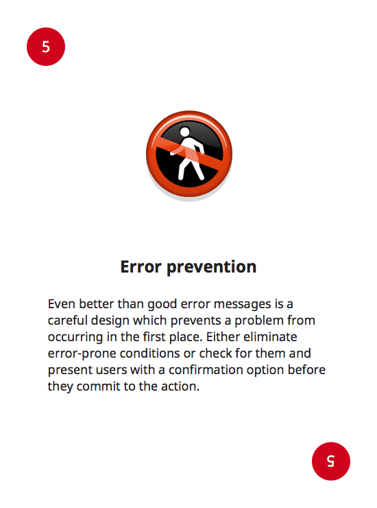
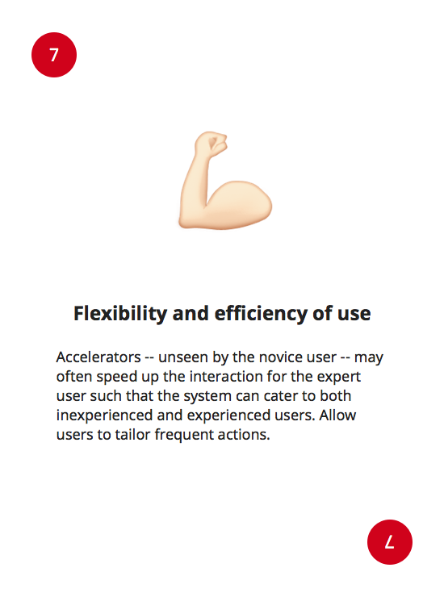

UXD Heuristics Card Game
A game for quick Heuristics dynamics with your team
Based on Jacob Nielsen's 10 Usability Heuristics for User Interface Design




How to use it?
We created this card game for regular usability checks on critical milestones of a product's User Journey. Once you have a set of milestones in your Journey mapped and defined, pick a random card and use that heuristic as a 'hat' to check for improvement opportunities in the selected journey milestone. Or use it however you like.
Card game adaptation by Raidho